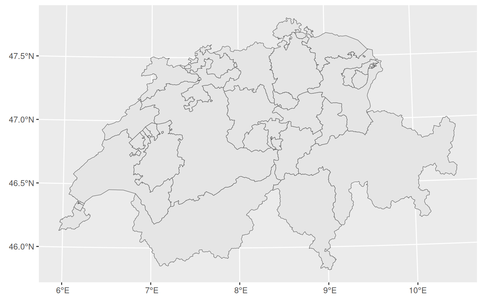
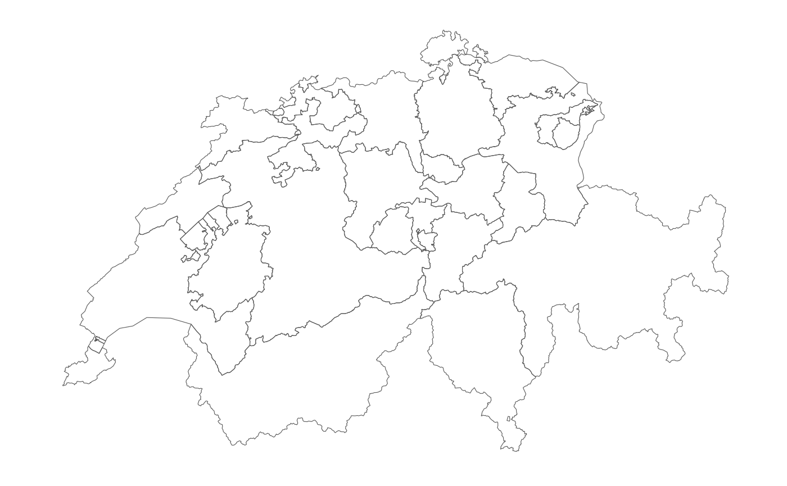

ggswissmaps data with
sf
vignettes/ggswissmaps_with_sf.Rmd
ggswissmaps_with_sf.RmdFrom version 0.1.2, ggswissmaps includes
boundaries of Switzerland, at various levels, also in sf
format. The 8 objects are stored in the list shp_sf:
library(ggswissmaps)
# str(shp_sf) # Very long output...
class(shp_sf)
#> [1] "list"
length(shp_sf)
#> [1] 8
lapply(shp_sf, class)
#> $g1b15
#> [1] "sf" "data.frame"
#>
#> $g1g15_encl
#> [1] "sf" "data.frame"
#>
#> $g1g15_li
#> [1] "sf" "data.frame"
#>
#> $g1g15
#> [1] "sf" "data.frame"
#>
#> $g1k15
#> [1] "sf" "data.frame"
#>
#> $g1l15
#> [1] "sf" "data.frame"
#>
#> $g1r15
#> [1] "sf" "data.frame"
#>
#> $g1s15
#> [1] "sf" "data.frame"
names(shp_sf)
#> [1] "g1b15" "g1g15_encl" "g1g15_li" "g1g15" "g1k15"
#> [6] "g1l15" "g1r15" "g1s15"ggswissmaps with sf
The boundaries stored in the list shp_sf can be used
with ggplot2::geom_sf():
library(ggplot2)
ggplot(shp_sf[["g1k15"]]) + geom_sf()
#> old-style crs object detected; please recreate object with a recent sf::st_crs()
#> old-style crs object detected; please recreate object with a recent sf::st_crs()
#> old-style crs object detected; please recreate object with a recent sf::st_crs()
The green background can be removed for example with
ggswissmaps::theme_white_f() or other ggplot2
themes, while the green background inside the boundaries can be removed
by setting fill = NA in
ggplot2::geom_sf():
ggplot(shp_sf[["g1k15"]]) +
geom_sf(fill = NA) +
ggswissmaps::theme_white_f()
#> old-style crs object detected; please recreate object with a recent sf::st_crs()
#> old-style crs object detected; please recreate object with a recent sf::st_crs()
#> old-style crs object detected; please recreate object with a recent sf::st_crs()
Note that all the ‘sf’ data frames stored in the list
shp_sf have the coordinate reference system (crs)
corrensponding to “EPSG: 21781”. This can be verified with
sf::st_crs():
library(sf)
#> Linking to GEOS 3.12.0, GDAL 3.8.4, PROJ 9.4.0; sf_use_s2() is TRUE
st_crs(shp_sf[[1]])
#> old-style crs object detected; please recreate object with a recent sf::st_crs()
#> Coordinate Reference System:
#> User input: EPSG:21781
#> wkt:
#> PROJCRS["CH1903 / LV03",
#> BASEGEOGCRS["CH1903",
#> DATUM["CH1903",
#> ELLIPSOID["Bessel 1841",6377397.155,299.1528128,
#> LENGTHUNIT["metre",1]]],
#> PRIMEM["Greenwich",0,
#> ANGLEUNIT["degree",0.0174532925199433]],
#> ID["EPSG",4149]],
#> CONVERSION["Swiss Oblique Mercator 1903M",
#> METHOD["Hotine Oblique Mercator (variant B)",
#> ID["EPSG",9815]],
#> PARAMETER["Latitude of projection centre",46.9524055555556,
#> ANGLEUNIT["degree",0.0174532925199433],
#> ID["EPSG",8811]],
#> PARAMETER["Longitude of projection centre",7.43958333333333,
#> ANGLEUNIT["degree",0.0174532925199433],
#> ID["EPSG",8812]],
#> PARAMETER["Azimuth of initial line",90,
#> ANGLEUNIT["degree",0.0174532925199433],
#> ID["EPSG",8813]],
#> PARAMETER["Angle from Rectified to Skew Grid",90,
#> ANGLEUNIT["degree",0.0174532925199433],
#> ID["EPSG",8814]],
#> PARAMETER["Scale factor on initial line",1,
#> SCALEUNIT["unity",1],
#> ID["EPSG",8815]],
#> PARAMETER["Easting at projection centre",600000,
#> LENGTHUNIT["metre",1],
#> ID["EPSG",8816]],
#> PARAMETER["Northing at projection centre",200000,
#> LENGTHUNIT["metre",1],
#> ID["EPSG",8817]]],
#> CS[Cartesian,2],
#> AXIS["easting (Y)",east,
#> ORDER[1],
#> LENGTHUNIT["metre",1]],
#> AXIS["northing (X)",north,
#> ORDER[2],
#> LENGTHUNIT["metre",1]],
#> USAGE[
#> SCOPE["Cadastre, engineering survey, topographic mapping (large and medium scale)."],
#> AREA["Liechtenstein; Switzerland."],
#> BBOX[45.82,5.96,47.81,10.49]],
#> ID["EPSG",21781]]I think that this is the “old” swiss crs, while the newest one is
“EPSG: 2056”. In order to change the crs we can use
st::st_transform():
tmp <- st_transform(shp_sf[[1]], crs = 2056)
#> old-style crs object detected; please recreate object with a recent sf::st_crs()
st_crs(tmp)
#> Coordinate Reference System:
#> User input: EPSG:2056
#> wkt:
#> PROJCRS["CH1903+ / LV95",
#> BASEGEOGCRS["CH1903+",
#> DATUM["CH1903+",
#> ELLIPSOID["Bessel 1841",6377397.155,299.1528128,
#> LENGTHUNIT["metre",1]]],
#> PRIMEM["Greenwich",0,
#> ANGLEUNIT["degree",0.0174532925199433]],
#> ID["EPSG",4150]],
#> CONVERSION["Swiss Oblique Mercator 1995",
#> METHOD["Hotine Oblique Mercator (variant B)",
#> ID["EPSG",9815]],
#> PARAMETER["Latitude of projection centre",46.9524055555556,
#> ANGLEUNIT["degree",0.0174532925199433],
#> ID["EPSG",8811]],
#> PARAMETER["Longitude of projection centre",7.43958333333333,
#> ANGLEUNIT["degree",0.0174532925199433],
#> ID["EPSG",8812]],
#> PARAMETER["Azimuth of initial line",90,
#> ANGLEUNIT["degree",0.0174532925199433],
#> ID["EPSG",8813]],
#> PARAMETER["Angle from Rectified to Skew Grid",90,
#> ANGLEUNIT["degree",0.0174532925199433],
#> ID["EPSG",8814]],
#> PARAMETER["Scale factor on initial line",1,
#> SCALEUNIT["unity",1],
#> ID["EPSG",8815]],
#> PARAMETER["Easting at projection centre",2600000,
#> LENGTHUNIT["metre",1],
#> ID["EPSG",8816]],
#> PARAMETER["Northing at projection centre",1200000,
#> LENGTHUNIT["metre",1],
#> ID["EPSG",8817]]],
#> CS[Cartesian,2],
#> AXIS["(E)",east,
#> ORDER[1],
#> LENGTHUNIT["metre",1]],
#> AXIS["(N)",north,
#> ORDER[2],
#> LENGTHUNIT["metre",1]],
#> USAGE[
#> SCOPE["Cadastre, engineering survey, topographic mapping (large and medium scale)."],
#> AREA["Liechtenstein; Switzerland."],
#> BBOX[45.82,5.96,47.81,10.49]],
#> ID["EPSG",2056]]